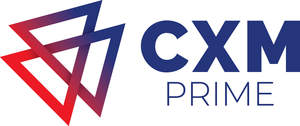

Trade Mark Journal No.2025/009 28 February 2025
UK00004163204 20 February 2025 (36)

- Class 36
- Financial services; Financial transaction services; Financial and monetary services; Financial brokerage services; Financial investment services; Financial and monetary services, and banking; Financial affairs services; Financial intermediary services; Financial investment management services; Brokering of financial services; Financial information services; Financial information and advisory services; Brokerage services in financial markets; Computerised financial advisory services; Financial data base services; Financial services provided to partnerships; Execution of financial transactions (Services for the -); Advisory services relating to financial investment; Financial information services relating to financial stock markets; Electronic financial trading services; Brokerage services relating to financial instruments; Computerised financial information services; Financial management services provided via the Internet; Financial consultancy services relating to investments; Brokerage services in the field of financial instruments; Brokerage; Securities brokerage; Brokerage of securities; Exchange brokerage; Investment brokerage; Securities brokerage and trading services; Commodity brokerage; Brokerage of commodities; Commodities brokerage; Securities and commodities brokerage; Financial brokerage; Brokerage (Financial -); Brokerage of futures; Futures brokerage; Automated securities brokerage; Brokerage of shares and other securities; Securities brokerage services; Brokerage of currency; Securities brokerage account services; Exchange brokerage services; Financial investment brokerage; Security brokerage; Bonds brokerage; Brokerage services; Traded options brokerage; Stock bond brokerage; Stock debenture brokerage; Securities and assets brokerage; Brokerage of shares or stocks and other securities; Brokerage house services; Brokerage of financial derivatives; Brokerage of futures contracts; Computerised securities brokerage services; Services of a stockbroker; Brokerage services for bonds; Stocks and bonds brokerage; Brokerage services relating to the securities markets; Stocks and bonds brokerage services; Brokerage services for stocks and bonds; Brokerage in the field of stocks; Capital investment brokerage; Trading in securities; Brokerage services for the purchase and sale of obligations; Brokerage services relating to securities offering; Securities trading services; Brokerage services for arranging financing by other financial institutions; Stock broking services; Brokerage services on the financial markets; Brokering services; Trading of securities options; Securities and commodities trading services; Arranging of finance.
CXM Prime Ltd
Representative: Olohirere Longe